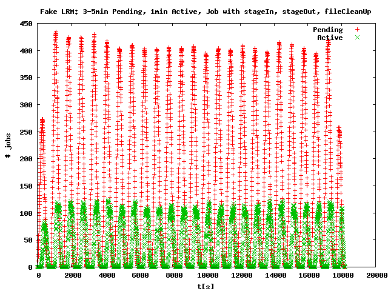

1 Tests on Nomer
1.1 Throughput tests on Nomer
1.2 Termination tests on Nomer
1.3 Fake LRM tests on Nomer
2 Tests on uct3-edge
2.1 Throughput tests on uct3-edge
2.2 Fake LRM tests on uct3-edge
2.3 Condor-G tests on uct3-edge
3 Errors
4 Lessons learnt
5 Conclusion
Nomer is a cloud of max 6 VM's, each with the following characteristics
5 client machines submitted to 1 server, each with 50 threads, for 1h. 50 threads means:
At most 50 concurrent operations (submission, resource property query, termination)
to the server at any time.
A client stopped submitting when it was holding 2K jobs in the server, and did
continue submitting another job only after one of his jobs finished.
After 1h all clients stopped submitting and waited for all their outstanding jobs to
finish.
By this at most 10K jobs had been active in the container at any time.
If a scenario included staging the transferred file had the size of 1B were transfered
between each client VM and the server VM.
If a scenario included fileCleanUp two files of size 1B were deleted.
On the server-side the jobs were run by 2 different users.
| Job Delegation |
Staging Delegation |
File Stage In |
File Stage Out |
File Clean Up |
Duration (min) |
Jobs/min | ||||
Simple job, Polling: |
||||||||||
Simple job, Notifications: |
||||||||||
Simple job, using GramJob API: |
||||||||||
Simple job, shared job delegation: |
||||||||||
Simple job, job delegation per job: |
||||||||||
Job with FileStageIn: |
||||||||||
Job with FileStageIn and FileStageOut: |
||||||||||
Job with FileStageIn, FileStageOut and FileCleanUp (no directory creation or directory removal): |
||||||||||
The fake local resource manager consists of a set of scripts, a SchedulerEventGenerator (SEG)
and a Java daemon, which simulate a local resource manager. All jobs are "queued" for a
configurable amount of time and then put into state Active for a configurable amount
of time.
This enabled us to simulate a local resource manager and a different load situation in
Gram4, compared to the quick running no-op jobs, without the need of a real local resource
manager.
The setup (number of clients, duration of submission, max jobs per client, etc)
had been the same like in the throughput tests described above.
In these tests jobs stayed in state Pending for 3-5min (random), and in state Active
for 1min.
| Job Delegation |
Staging Delegation |
File Stage In |
File Stage Out |
File Clean Up |
Duration (min) |
Jobs/min | ||||
The following graphs illustrate how many jobs had been in state Pending/Active and at any time in the test. There is a limited number of worker threads to process jobs in the Gram4 StateMachine. The peaks and valleys show the internal StateMachine job processing priority: Jobs that are furthest along and are waiting to be moved to the next state are processed first.
|
 |
The uct3-edge cluster, which was also used by other users at the time of the tests, has the following characteristics per machine:
4 client machines (uct3-edge[2356]) submitted to 1 server (uct3-edge7), each with 50
submission threads, for 1h. 50 threads means: At most 50 concurrent operations (submission,
resource property query, termination) to the server at any time.
A client stopped submitting when it was holding 2.5K jobs in the server, and did
continue submitting another job only after one of his jobs finished.
After 1h all clients stopped submitting and waited for all their outstanding jobs to
finish.
By this at most 10K jobs had been active in the container at any time.
If a scenario included staging the transferred file had the size of 1B were transfered
between each client VM and the server VM.
If a scenario included fileCleanUp two files of size 1B were deleted.
On the server-side the jobs ran under the same user id, the same user that ran the
container. That means that no sudo callouts were done.
| Job Delegation |
Staging Delegation |
File Stage In |
File Stage Out |
File Clean Up |
Duration (min) |
Jobs/min | ||||
The fake local resource manager consists of a set of scripts, a SchedulerEventGenerator (SEG)
and a Java daemon, which simulate a local resource manager. All jobs are "queued" for a
configurable amount of time and then put into state Active for a configurable amount
of time.
This enabled us to simulate a local resource manager and a different load situation in
Gram4, compared to the quick running no-op jobs, without the need of a real local resource
manager.
The setup (number of clients, duration of submission, max jobs per client, etc)
had been the same like in the throughput tests described above.
In these tests jobs stayed in state Pending for 3-5min (random), and in state Active
for 1min.
| Job Delegation |
Staging Delegation |
File Stage In |
File Stage Out |
File Clean Up |
Duration (min) |
Jobs/min | ||||
The following graphs illustrate how many jobs had been in state Pending/Active and "in the local resource manager" at any time in the test. There is a limited number of worker threads to process jobs in the Gram4 StateMachine. The peaks and valleys show the internal StateMachine job processing priority. Jobs that are furthest along and are waiting to be moved to the next state are processed first.
 |
 |
We used Condor-7.1.4 in these tests. It's so far the only version that works without problems for job submissions to GT 4.2.
| Job Delegation |
Staging Delegation |
File Stage In |
File Stage Out |
File Clean Up |
Duration (min) |
Jobs/min | ||||
10K jobs with FileStageIn, FileStageOut and FileCleanUp including unique job directory and directory deletion: |
||||||||||
20K jobs, 10s for both timeout and delay of MEJH's LRU-cache |
||||||||||
40K jobs, 10s for both timeout and delay of MEJH's LRU-cache |
||||||||||
On nomer no error happened at all. On the server-side on uct3-edge7 the following errors
happened:
2008-12-09T10:05:56.630-06:00 ERROR service.TransferWork [Thread-29,oldLog:175] Transient transfer error Check for existence of directory /home/mfeller/.globus/scratch failed on server uct3-edge7.uchicago.edu [Caused by: java.io.EOFException]Comment: RFT error, happens in every test-run; is handled ok by retries in RFT. Happens only with directory creation and deletion, and it seems that this is new in 4.2
2008-12-10T10:52:38.403-06:00 WARN service.DelegationResource [ServiceThread-74,notifyListeners:407]
Error setting credential on listener
java.lang.RuntimeException: Error retrieving resource to set delegated credentialnull
at org.globus.transfer.reliable.service.CredentialRefreshListener.setCredential(CredentialRefreshListener.java:77)
at org.globus.delegation.service.DelegationResource.notifyListeners(DelegationResource.java:405)
at org.globus.delegation.service.DelegationResource.setToken(DelegationResource.java:307)
at org.globus.delegation.service.DelegationResource.storeToken(DelegationResource.java:154)
at org.globus.delegation.service.DelegationService.refresh(DelegationService.java:64)
at sun.reflect.NativeMethodAccessorImpl.invoke0(Native Method)
at sun.reflect.NativeMethodAccessorImpl.invoke(NativeMethodAccessorImpl.java:39)
at sun.reflect.DelegatingMethodAccessorImpl.invoke(DelegatingMethodAccessorImpl.java:25)
at java.lang.reflect.Method.invoke(Method.java:585)
at org.apache.axis.providers.java.RPCProvider.invokeMethod(RPCProvider.java:410)
at org.globus.axis.providers.RPCProvider.invokeMethodSub(RPCProvider.java:112)
at org.globus.axis.providers.PrivilegedInvokeMethodAction.run(PrivilegedInvokeMethodAction.java:47)
at java.security.AccessController.doPrivileged(Native Method)
at javax.security.auth.Subject.doAs(Subject.java:396)
at org.globus.gsi.jaas.GlobusSubject.runAs(GlobusSubject.java:60)
at org.globus.gsi.jaas.JaasSubject.doAs(JaasSubject.java:100)
at org.globus.axis.providers.RPCProvider.invokeMethod(RPCProvider.java:102)
at org.apache.axis.providers.java.RPCProvider.processMessage(RPCProvider.java:186)
at org.apache.axis.providers.java.JavaProvider.invoke(JavaProvider.java:332)
at org.apache.axis.strategies.InvocationStrategy.visit(InvocationStrategy.java:32)
at org.apache.axis.SimpleChain.doVisiting(SimpleChain.java:118)
at org.apache.axis.SimpleChain.invoke(SimpleChain.java:83)
at org.apache.axis.handlers.soap.SOAPService.invoke(SOAPService.java:454)
at org.apache.axis.server.AxisServer.invokeService(AxisServer.java:234)
at org.apache.axis.server.AxisServer.invoke(AxisServer.java:375)
at org.globus.wsrf.container.ServiceThread.doPost(ServiceThread.java:949)
at org.globus.wsrf.container.ServiceThread.process(ServiceThread.java:684)
at org.globus.wsrf.container.GSIServiceThread.process(GSIServiceThread.java:182)
at org.globus.wsrf.container.ServiceThread.run(ServiceThread.java:471)
Comment: Non-fatal, no job fails because of that, caused by RFT2008-12-09T10:47:35.459-06:00 ERROR service.CredentialRefreshListener [ServiceThread-69,oldLog:175] org.globus.wsrf.NoSuchResourceException at org.globus.wsrf.impl.ResourceHomeImpl.find(ResourceHomeImpl.java:290)Comment: Non-fatal, no job fails because of that, probably RFT related, I never saw this with the Throughput-tester
Job 0ae808c0-c1d0-11dd-b002-b73ff0672cbb failed. Fault #1: Description: Error code: 202java.io.IOException: Cannot allocate memory Cause: org.globus.exec.generated.FaultType: Error code: 202java.io.IOException: Cannot allocate memory caused by [0: org.oasis.wsrf.faults.BaseFaultType: java.io.IOException: Cannot allocate memory]Comment: This is due to low memory. Runtime.exec() forks the java process and for a short time needs too much memory. Using less memory in the JVM (-Xmx) removed this problem
WARN helper.ProcessingFaultHelper [pool-1-thread-2,createFaultFromErrorCode:233] Unhandled fault code 202.Comment: Happened rarely and only in tests where memory problems showed up, so it might be memory related
WARN service.DelegationResource [pool-1-thread-6,store:574] Check file permissions on "/scratch/mfeller/.globus/persisted/uct3-edge7.uchicago.edu-9999/DelegationResource/85cb0030-c287-11dd-8ca8-f8ea0cea575b.ser"Comment: Does not happen very often and so far only in tests where memory problems showed up, so it might be memory related
NullPointerException in JobManagerScriptComment: Happened only once in this test series, don't know the reason
"2008-12-09T13:02:45.155-06:00 WARN processing.StateProcessingTask [pool-1-thread-9,run:63]
Job resource 35b3b270-c608-11dd-a1d2-b0667ead9260 not found.
java.lang.NullPointerException
at org.globus.wsrf.utils.cache.LRUCache.update(LRUCache.java:150)
at org.globus.wsrf.impl.ResourceHomeImpl.find(ResourceHomeImpl.java:298)
at org.globus.exec.service.exec.processing.StateProcessingTask.run(StateProcessingTask.java:55)
at java.util.concurrent.ThreadPoolExecutor$Worker.runTask(ThreadPoolExecutor.java:650)
at java.util.concurrent.ThreadPoolExecutor$Worker.run(ThreadPoolExecutor.java:675)
at java.lang.Thread.run(Thread.java:595)"
Comment: Happened 2-3 times